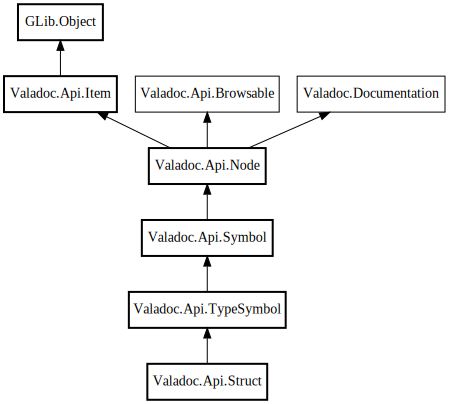

Struct
Object Hierarchy:

Description:
public class Struct :
TypeSymbol
Represents a struct declaration.
Content:
Properties:
Creation methods:
- public Struct (Node parent, SourceFile file, string name, SymbolAccessibility accessibility, SourceComment? comment, string? cname, string? type_macro_name, string? type_function_name, string? type_id, string? dup_function_cname, string? copy_function_cname, string? destroy_function_cname, string? free_function_cname, bool is_basic_type, void* data)
Methods:
Fields:
Inherited Members:
All known members inherited from class Valadoc.Api.TypeSymbol
All known members inherited from class Valadoc.Api.Symbol
All known members inherited from class Valadoc.Api.Node
All known members inherited from class Valadoc.Api.Item
All known members inherited from class GLib.Object
- @new
- new_valist
- newv
- new_with_properties
- add_toggle_ref
- add_weak_pointer
- bind_property
- connect
- constructed
- disconnect
- dispose
- dup_data
- dup_qdata
- freeze_notify
- @get
- get_class
- get_data
- get_property
- get_qdata
- get_type
- getv
- notify_property
- @ref
- ref_sink
- replace_data
- replace_qdata
- remove_toggle_ref
- remove_weak_pointer
- @set
- set_data
- set_data_full
- set_property
- set_qdata
- set_qdata_full
- setv
- steal_data
- steal_qdata
- thaw_notify
- unref
- watch_closure
- weak_ref
- weak_unref
- notify
- ref_count
All known members inherited from interface Valadoc.Api.Browsable
All known members inherited from interface Valadoc.Documentation